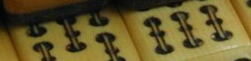

「新象牙」といっても、象牙とは何の関係もない。完璧な合成樹脂牌。
彫り物材料のベストといえば、もちろん象牙。麻雀牌にしても象牙製のものが珍重されている。しかしなんと云っても象牙は非常に高価。そこで昭和初期には、早くも合成樹脂で、象牙に似せた牌が何種類も製造された。これを「新象牙牌」と呼ぶ。
象牙牌の特徴は、なんと云っても牙が成長する過程で作られる年輪のような薄い縞模様。そこで新象牙牌は、象牙に似せるため、その縞模様をくっきりと浮き出させている。

しかし実は象牙に似せるためくっきりと浮き出させたこの縞模様が、新象牙牌の最大のウイークポイント。本物の象牙牌に、こんな黒っぽいくっきりとした直線的な縞模様はない。本物は、白っぽくて薄く、どちらか云うとわずかにカーブした縞模様である。そこで本物の象牙牌か合成樹脂製の新象牙牌かどうかは、素人が見ても一目で区別がつくことが多い。
本物の縞模様↓
とは云うものの、象牙＝縞模様 でもない。縞模様など無い象牙牌もいくらでも存在する。σ(-_-)も素人なのではっきりしたことは知らないが、これはどうも象牙の部位によるらしい。そこで 縞模様が無い＝牛骨製 ということにもならない。
そこでデキのいい牛骨牌になると、パッと見では象牙と区別がつきにくいものも多くある（さすがに象骨、鹿骨、鯨骨と区別がつかないことはないが）。
それでも見方はあるので、玄人が実物みれば象牙かどうかは大体は判る。
とうぜん象牙牌は、牛骨牌より高価である。しかし常に象牙牌値段＞牛骨牌値段でもない。象牙牌より高価な牛骨牌だって存在する。また縞模様が有れば、象牙かどうかの区別が簡単に付くと云うだけのことであって、縞模様が無い＝安い象牙 ということでもない。
あくまで材質は牌の価値の一つであって、全体的な価値は、作られた年代とか、牌の大きさとか、万筒索の彫りとか、それがどのレベルの彫りであるか、どんな花牌が揃っているか、どんな付属品が揃っているか、どんな箱に入っているか、によって決まってくる。象牙牌より高価な牛骨牌が存在するのはそのためである。
極端なことを云うと、日本で最初に作られた合成樹脂牌などはデキも良くなく、骨董的な価値は低い。しかし歴史的、資料的な価値は非常に高い。そこで知らない人あ見ればぼろぼろのジャンク品でも、見る人が見ればかなり高い評価がつく。
とは云うものの、新象牙牌は表面処理がツルッとしていて手ざわりがよく、結構使いやすい。おまけに普通の練り牌に比べて特に値段が高いわけではないし、高価な象牙牌の雰囲気を持っているということで結構人気があった。
しかし現在は自動卓全盛で、手積み用の牌はほとんど製造されなくなった。とうぜん一般の人が象牙牌・新象牙牌を目にする機会もぐんと少なくい。
そのためか、オークションサイトなんかを見ていると、この新象牙牌や一般の練り牌が「象牙牌」として出品されているケースが結構多い（ような気がする）。
掲載されている写真も、遠目であったり肝心な箇所がはっきり写っていなかったりする。また何と云っても実物を見なければはっきりしたことは言えないのであるが、写真だけで判断する限り、象牙牌として出品されている中に、どう見ても練り牌としか思えない牌が多々ある。
出品者の評価歴をみると、「非常に良い」ばかりなので、これは出品者が勘違いして出品しているだけと思われる。またそういう出品者の場合、「象牙でなかったら、返品受け付けます」となっているので、トラブルも起きていないようである。しかし落札者も写真では判断できないくらいであるから、すぐには気が付かないケースも出てくるような気がする。
ちと以前に、知らない方から「象牙ということで落札しましたが、本当にそうでしょうか？」というメールを頂いたことがあった。ところがメールにはその牌のいろいろ特徴か書かれてあったが、写真が添付されていない。
もちろん添付されていても、見知らぬ方からの添付では、ちと怖いのでファイルオープンしにくい。ひょっとしてメールされた方も、そういうことを慮んばかって添付されなかったかも知れない。
それはしかるべき配慮ではあるにしても、さすがに文章だけでは判断しかねる（前述したように、縞模様が無い＝偽象牙 というわけでもないし）。しかし文章で判断する限りでは、昭和30年代に作られた普通の練り牌のような気がした。
そこで「実物を拝見しないとはっきりした事は判りませんが、お話だけで判断する限り、どうも象牙では無いような気がします」と返信しておいた。
１年ほど前に、オークションで、どう見ても新象牙としか思えない牌が本象牙として出品されていた。見るに見かねて出品者に、「これは新象牙という種類の練り牌のような気がします」という主旨のメールをしたことがある。
すると「新象牙牌というものがあることは承知していますが、これは間違いなく象牙です」という返信があった。それ以上はどうしようもないので、ほっておいた。それからは本人がそう思いこんでいる以上、仕方がないと思って何も言わないようしにている。今は、まるでハラハラドキドキショーを見ているような気持ちでオークションを見ている。(^-^；
|